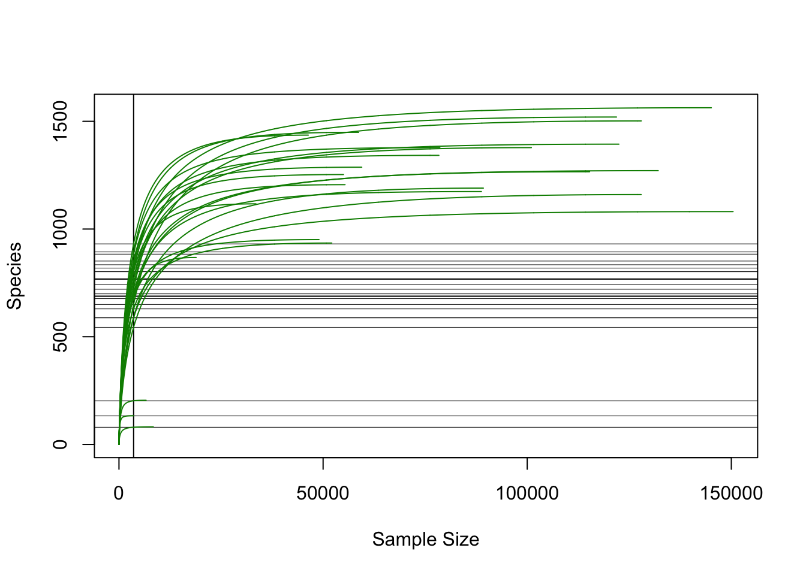
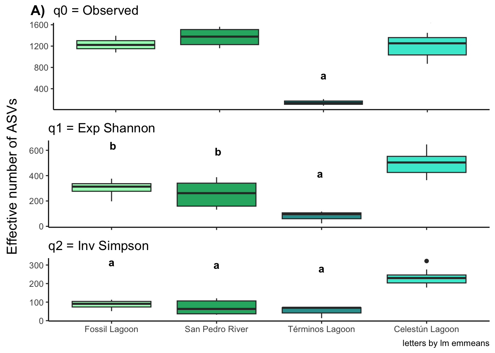

Alpha diversity
Tip
Alpha diversity indices were calculated with Hill numbers (q0 = observed richness, q1 = Shannon Exp and q2 = Inv Simpson). The significance of the observed differences among mangrove systems was determined by employing a linear model, given the imbalanced sample numbers.
Load libraries and prepare data
#load data
physeq_qiime3 <- readRDS("rds/compare_mangroves/physeq_qiime3.rds")#Mangrove system colors
loc_colors <- c("Fossil Lagoon"= "#A7fcc1",
"San Pedro River" = "#26B170",
"Términos Lagoon" = "#329D9C",
"Celestún Lagoon" = "#41e8d3")# Extract data from phyloseq object
#library(phyloseq)
otu_data <- otu_table(physeq_qiime3, taxa_are_rows = TRUE)
metadata <- as(sample_data(physeq_qiime3), "data.frame")01. Get Hill numbers
# Calculate hill numbers
#library(hilldiv)
q0 <- hill_div(otu_data, qvalue = 0)
q1 <- hill_div(otu_data, qvalue = 1)
q2 <- hill_div(otu_data, qvalue = 2)
# Merge metadata with Hill numbers
#library(tidyverse)
q012 <- cbind(q0, q1, q2) %>% as.data.frame() %>%
rownames_to_column(var = "SampleID")
# join
metadata_with_hill <- q012 %>%
inner_join(metadata, by = c("SampleID"="SampleID"))
# show
metadata_with_hill %>% head() SampleID q0 q1 q2 BioSample ID SRA SampleName Collection_date depth
1 S1A015 1266 330 106.0 S1A015 RSP S1A015 2023-09-28 0-15
2 S1B07 1502 164 36.0 S1B07 RSP S1B07 2023-09-28 0-15
3 S2B07 1378 351 106.8 S2B07 RSP S2B07 2023-09-28 0-15
4 S3A07 1190 154 37.6 S3A07 RSP S3A07 2023-09-28 0-15
5 S4B07 1563 388 120.4 S4B07 RSP S4B07 2023-09-29 0-15
6 S5A07 1160 131 32.1 S5A07 RSP S5A07 2023-09-29 0-15
site elevation Broad_scale_environmental_context
1 1A NA
2 1B NA
3 2B NA
4 3A NA
5 4B NA
6 5A NA
Local_scale_environmental_context Environmental_medium Latitude_and_Longitude
1
2
3
4
5
6
Geographic.Location Study_zone Ecological_type Parametros Temperatura
1 Mexico:Tabasco Rio San Pedro Fringe no NA
2 Mexico:Tabasco Rio San Pedro Fringe no NA
3 Mexico:Tabasco Rio San Pedro Fringe no NA
4 Mexico:Tabasco Rio San Pedro Fringe no NA
5 Mexico:Tabasco Rio San Pedro Fringe no NA
6 Mexico:Tabasco Rio San Pedro Fringe no NA
Salinidad pH Redox.mV S.2 SO4 season filter Mangrove.system Mangrove_type
1 NA NA NA NA NA flood si San Pedro River Interior
2 NA NA NA NA NA flood si San Pedro River Interior
3 NA NA NA NA NA flood si San Pedro River Interior
4 NA NA NA NA NA flood si San Pedro River Interior
5 NA NA NA NA NA flood si San Pedro River Interior
6 NA NA NA NA NA flood si San Pedro River Interior#save table
write.table(metadata_with_hill, "Tables/SurfaceComparison/Metadata_with_hill.tsv",
quote = FALSE, sep = "\t", row.names = TRUE, col.names=TRUE)02. Get Hill means
# Reorder q values
meta_qs <- metadata_with_hill %>%
pivot_longer(cols = q0:q2, names_to = "q", values_to = "value") %>%
filter(q %in% c("q0", "q1", "q2")) %>%
mutate(
qs = case_when(
q == "q0" ~ "q0=Observed",
q == "q1" ~ "q1=Exp Shannon",
q == "q2" ~ "q2=Inv Simpson",
))
#Get means of Hill numbers
means <- meta_qs %>% group_by(Mangrove_type, Mangrove.system, qs) %>%
summarise(means = mean(value, na.rm = TRUE),
sd = sd(value, na.rm = TRUE),
.groups = 'drop')
print(means)# A tibble: 12 × 5
Mangrove_type Mangrove.system qs means sd
<chr> <chr> <chr> <dbl> <dbl>
1 Coastal Celestún Lagoon q0=Observed 1202 207.
2 Coastal Celestún Lagoon q1=Exp Shannon 496. 87.6
3 Coastal Celestún Lagoon q2=Inv Simpson 234. 40.5
4 Coastal Términos Lagoon q0=Observed 140 61.8
5 Coastal Términos Lagoon q1=Exp Shannon 78.8 48.9
6 Coastal Términos Lagoon q2=Inv Simpson 51.2 32.7
7 Interior Fossil Lagoon q0=Observed 1230 134.
8 Interior Fossil Lagoon q1=Exp Shannon 300. 75.1
9 Interior Fossil Lagoon q2=Inv Simpson 86.5 26.9
10 Interior San Pedro River q0=Observed 1368. 166.
11 Interior San Pedro River q1=Exp Shannon 254. 105.
12 Interior San Pedro River q2=Inv Simpson 71.7 38.4#save table
write.table(means, "Tables/SurfaceComparison/Hill_means_sd.tsv", quote = FALSE,
sep = "\t", row.names = TRUE, col.names=TRUE)
# group by mangrove type
means_mangrove_type <- meta_qs %>% group_by(Mangrove_type, qs) %>%
summarise(means = mean(value, na.rm = TRUE),
sd = sd(value, na.rm = TRUE),
.groups = 'drop')
print(means_mangrove_type)# A tibble: 6 × 4
Mangrove_type qs means sd
<chr> <chr> <dbl> <dbl>
1 Coastal q0=Observed 974. 488.
2 Coastal q1=Exp Shannon 407. 195.
3 Coastal q2=Inv Simpson 194. 86.3
4 Interior q0=Observed 1318. 163.
5 Interior q1=Exp Shannon 271. 94.0
6 Interior q2=Inv Simpson 77.1 34.0write.table(means, "Tables/SurfaceComparison/Hill_means_sd_mangrove_type.tsv", quote = FALSE,
sep = "\t", row.names = TRUE, col.names=TRUE)03. Get sequencing effort
### Sample effort
#library(vegan)
mat <- as(t(otu_table(physeq_qiime3)), "matrix")
raremax <- min(rowSums(mat))
# plot
system.time(rarecurve(mat, step = 100, sample = raremax, col = "green4",
label = FALSE))
user system elapsed
4.705 0.123 4.852 # save
pdf("Figures/SurfaceComparison/sample_effort.pdf")
system.time(rarecurve(mat, step = 100, sample = raremax, col = "green4",
label = FALSE)) user system elapsed
4.971 0.174 5.293 dev.off()quartz_off_screen
2 04. Get significant differences
Remember
The significance of the observed differences among mangrove systems was determined by employing a linear model, given the imbalanced sample numbers.
q0 Observed richness
# linear model adjust
q0lm <- lm(q0 ~ Mangrove.system, data = metadata_with_hill)
# summary
summary(q0lm)
Call:
lm(formula = q0 ~ Mangrove.system, data = metadata_with_hill)
Residuals:
Min 1Q Median 3Q Max
-334.0 -102.4 9.6 140.0 247.0
Coefficients:
Estimate Std. Error t value Pr(>|t|)
(Intercept) 1230.0 88.3 13.93 4.5e-12 ***
Mangrove.systemCelestún Lagoon -28.0 103.1 -0.27 0.79
Mangrove.systemSan Pedro River 138.4 110.7 1.25 0.22
Mangrove.systemTérminos Lagoon -1090.0 134.9 -8.08 7.0e-08 ***
---
Signif. codes: 0 '***' 0.001 '**' 0.01 '*' 0.05 '.' 0.1 ' ' 1
Residual standard error: 177 on 21 degrees of freedom
Multiple R-squared: 0.84, Adjusted R-squared: 0.817
F-statistic: 36.7 on 3 and 21 DF, p-value: 1.56e-08# check model reliability
shapiro.test(residuals(q0lm))
Shapiro-Wilk normality test
data: residuals(q0lm)
W = 1, p-value = 0.4# get differences with emmeans
#library(emmeans)
q0_lm_means <- emmeans(q0lm, pairwise ~ Mangrove.system)
# get significance letters
#library(multcomp)
cld_results <- cld(object = q0_lm_means$emmeans, Letters = letters)
# Convertir a data frame
q0_emmeans_df <- as.data.frame(cld_results)
q0_emmeans_df Mangrove.system emmean SE df lower.CL upper.CL .group
Términos Lagoon 140 102.0 21 -72 352 a
Celestún Lagoon 1202 53.3 21 1091 1313 b
Fossil Lagoon 1230 88.3 21 1046 1414 b
San Pedro River 1368 66.8 21 1230 1507 b
Confidence level used: 0.95
P value adjustment: tukey method for comparing a family of 4 estimates
significance level used: alpha = 0.05
NOTE: If two or more means share the same grouping symbol,
then we cannot show them to be different.
But we also did not show them to be the same. # boxplot with significance
q0plot <- ggplot(metadata_with_hill, aes(x = Mangrove.system, y = q0, fill = Mangrove.system)) +
geom_boxplot() +
#geom_jitter(aes(fill = Mangrove.system), width = 0.1, alpha = 0.4) +
geom_text(data = q0_emmeans_df, aes(y = emmean, label = .group), vjust = -3,
color = "black", fontface = "bold", position = position_dodge(0.9)) +
labs(title = "q0 = Observed", y = NULL, x = NULL) + #,
#caption = "letters by lm emmeans") +
theme_classic() + scale_fill_manual(values = loc_colors) +
theme(legend.position = "none", axis.text.x = element_blank())q1 Diversity Exp Shannon
Call:
lm(formula = q1 ~ Mangrove.system, data = metadata_with_hill)
Residuals:
Min 1Q Median 3Q Max
-131.78 -90.32 8.03 70.63 150.27
Coefficients:
Estimate Std. Error t value Pr(>|t|)
(Intercept) 300.0 44.3 6.77 1.1e-06 ***
Mangrove.systemSan Pedro River -45.6 55.5 -0.82 0.4209
Mangrove.systemTérminos Lagoon -221.2 67.6 -3.27 0.0037 **
Mangrove.systemCelestún Lagoon 196.2 51.7 3.79 0.0011 **
---
Signif. codes: 0 '***' 0.001 '**' 0.01 '*' 0.05 '.' 0.1 ' ' 1
Residual standard error: 88.6 on 21 degrees of freedom
Multiple R-squared: 0.763, Adjusted R-squared: 0.729
F-statistic: 22.5 on 3 and 21 DF, p-value: 9.24e-07#check model reliability
shapiro.test(residuals(q1lm))
Shapiro-Wilk normality test
data: residuals(q1lm)
W = 0.9, p-value = 0.2# significance
q1_lm_means <- emmeans(q1lm, pairwise ~ Mangrove.system)
cld_results <- cld(object = q1_lm_means$emmeans, Letters = letters)
# Convert to data frame
q1_emmeans_df <- as.data.frame(cld_results)
q1_emmeans_df Mangrove.system emmean SE df lower.CL upper.CL .group
Términos Lagoon 79 51.1 21 -28 185 a
San Pedro River 254 33.5 21 185 324 b
Fossil Lagoon 300 44.3 21 208 392 b
Celestún Lagoon 496 26.7 21 441 552 c
Confidence level used: 0.95
P value adjustment: tukey method for comparing a family of 4 estimates
significance level used: alpha = 0.05
NOTE: If two or more means share the same grouping symbol,
then we cannot show them to be different.
But we also did not show them to be the same. # boxplot
q1plot <- ggplot(metadata_with_hill, aes(x = Mangrove.system , y = q1, fill = Mangrove.system)) +
geom_boxplot() +
#geom_jitter(aes(fill = Mangrove.system), width = 0.1, alpha = 0.4) +
geom_text(data = q1_emmeans_df, aes(y = emmean, label = .group), vjust = -5,
color = "black", fontface = "bold", position = position_dodge(0.9)) + labs(title = "q1 = Exp Shannon", y = NULL, x = NULL) + #,
#caption = "letters by lm emmeans") +
theme_classic() + scale_fill_manual(values = loc_colors) +
theme(legend.position = "none", axis.text.x = element_blank())q2 Dominance Inv Simpson
Call:
lm(formula = q2 ~ Mangrove.system, data = metadata_with_hill)
Residuals:
Min 1Q Median 3Q Max
-54.83 -34.13 -3.61 19.39 88.13
Coefficients:
Estimate Std. Error t value Pr(>|t|)
(Intercept) 86.5 18.7 4.62 0.00015 ***
Mangrove.systemSan Pedro River -14.8 23.5 -0.63 0.53567
Mangrove.systemTérminos Lagoon -35.4 28.6 -1.23 0.23063
Mangrove.systemCelestún Lagoon 147.0 21.9 6.72 1.2e-06 ***
---
Signif. codes: 0 '***' 0.001 '**' 0.01 '*' 0.05 '.' 0.1 ' ' 1
Residual standard error: 37.5 on 21 degrees of freedom
Multiple R-squared: 0.847, Adjusted R-squared: 0.825
F-statistic: 38.8 on 3 and 21 DF, p-value: 9.48e-09#check model reliability
shapiro.test(residuals(q2lm))
Shapiro-Wilk normality test
data: residuals(q2lm)
W = 0.9, p-value = 0.2# get significance
q2_lm_means <- emmeans(q2lm, pairwise ~ Mangrove.system)
cld_results <- cld(object = q2_lm_means$emmeans, Letters = letters)
# Convert to data frame
q2_emmeans_df <- as.data.frame(cld_results)
q2_emmeans_df Mangrove.system emmean SE df lower.CL upper.CL .group
Términos Lagoon 51.2 21.6 21 6.1 96.2 a
San Pedro River 71.7 14.2 21 42.3 101.2 a
Fossil Lagoon 86.5 18.8 21 47.5 125.5 a
Celestún Lagoon 233.5 11.3 21 210.0 257.0 b
Confidence level used: 0.95
P value adjustment: tukey method for comparing a family of 4 estimates
significance level used: alpha = 0.05
NOTE: If two or more means share the same grouping symbol,
then we cannot show them to be different.
But we also did not show them to be the same. # boxplot
q2plot <- ggplot(metadata_with_hill, aes(x = Mangrove.system, y = q2, fill = Mangrove.system)) +
geom_boxplot() +
#geom_jitter(aes(fill = Mangrove.system), width = 0.1, alpha = 0.4) +
geom_text(data = q2_emmeans_df, aes(y = emmean, label = .group), vjust = -5,
color = "black", fontface = "bold", position = position_dodge(0.9)) +
labs(title = "q2 = Inv Simpson", y = NULL, x = NULL,
caption = "letters by lm emmeans") +
theme_classic() + scale_fill_manual(values = loc_colors) +
theme(legend.position = "none")Combine plots
#Combine alpha diversity plots
# library(ggplot2)
# library(cowplot)
ytitle <- ggdraw() + draw_label("Effective number of ASVs",
angle = 90, size = 14 )
q012plot <- plot_grid(q0plot, q1plot, q2plot,
labels = c("A)", "", ""), ncol = 1)
q012y_plot <- plot_grid(ytitle, q012plot, ncol = 2, rel_widths = c(0.05, 1))
# show
q012y_plot
# save
ggsave("Figures/SurfaceComparison/alphadiv_per_loc.pdf",
q012y_plot, width = 6.3, height = 9.9)Save rds alpha diversity plot
saveRDS(q012y_plot, "rds/compare_mangroves/alpha_diversity_surface_plot.rds")